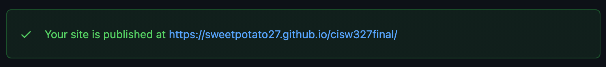

1: Install Git and Register with GitHub
Navigate to https://git-scm.com/downloads in a web browser
Click the download link that is specfic for your computer
Download and install git
Click the download link that is specfic for your computer
Download and install git
Open a command line interface on your computer
Type 'git --version' and press enter
If you see something like 'git version 2.13.1' git is installed
Type 'git --version' and press enter
If you see something like 'git version 2.13.1' git is installed
Navigate to https://github.com/join in a web browser
Sign up for github
Sign up for github
Open command line interface
Configure username and email for git
Configure username and email for git
Check out this link for more information
2: Make a simple webpage
Create a folder called my_website
Create a file index.html inside of /my_website
Create a file index.html inside of /my_website
Create a basic HTML page
Inside the body element
Add a span element with 'Hello, World!' inside
Inside the body element
Add a span element with 'Hello, World!' inside
Save the HTML file and open with a web browser
If you see 'hello, world!'
Move on
If you see 'hello, world!'
Move on
3: Initialize git and push directory to GitHub
Log in to github
Create a new github repository
Create a new github repository
Name my_website
Make it public
Add a description if you want
Leave every thing else unchecked unless you do not want to
Make it public
Add a description if you want
Leave every thing else unchecked unless you do not want to
Some helpful git commands will show
Open your command line interface
Change (cd) to the /my_website directory
Type 'git init'
Type 'git commit -m "first commit"'
Type 'git branch -M main'
Type 'git remote add origin https://github.com/yourgithubname/yourrepositoryname.git'
The above is very important, copy the version that github gave you or
Replace username and repository name with your specific names
Type 'git push -u origin main'
If there are no errors then you are successful!
Continue to github pages set up...
Change (cd) to the /my_website directory
Type 'git init'
Type 'git commit -m "first commit"'
Type 'git branch -M main'
Type 'git remote add origin https://github.com/yourgithubname/yourrepositoryname.git'
The above is very important, copy the version that github gave you or
Replace username and repository name with your specific names
Type 'git push -u origin main'
If there are no errors then you are successful!
Continue to github pages set up...
4: Set up GitHub Pages
Navigate to your github repository and click the settings tab
Then click the pages tab
You should see the following about half way down the page
Then click the pages tab
You should see the following about half way down the page
Configure the source to branch: main
and select /(root) as the desired directory
and select /(root) as the desired directory
Now for the most important part
Go listen to your favorite song
(right now mine is Down on the Street by The Stooges)
After check github pages tab and if your site is published
Go check it out at the given url!

Go listen to your favorite song
(right now mine is Down on the Street by The Stooges)
After check github pages tab and if your site is published
Go check it out at the given url!
WOOT!